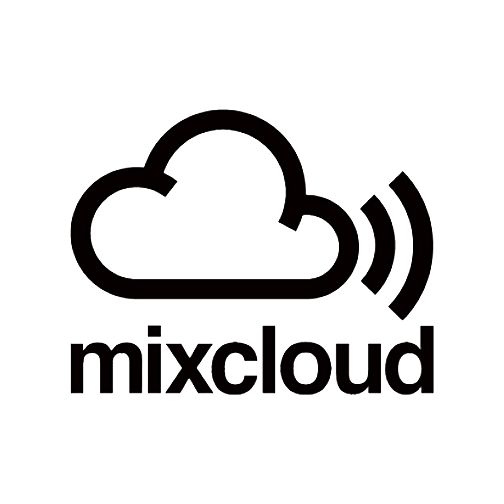

My name is Erik “Break DJ E Double” Arroyo I am 42 years old I was born in 1979, raised in Chicago, IL. As a child growing up I would peek into my father’s record collection to look at his Spanish records wondering how a record was played. Later on into my teens my brother’s friends had turntables and they let me try them and experiment on how to “mix” and “blend”.
When I saw a cousin of mine by the name “PHAZE” from PHAZE II Dj at his home I was fascinated by the sound, the groove, and the music. Although he never showed me, he always let me sit near his bed to watch and listen. I would be there for hours and hours just listening away. In that same house in the basement is where I met the DJ who would influence me in my direction and guidance. His name was DJ Presyce.
My cousins formed a BBOY crew by the name of PHAZE II back in 1982 and in 1998 they were working on a routine for a show they would later perform in a Germany that year called Battle of the Year. As I watched their routine, Dj Presyce was sitting next to me while listening to the music he provided for their show. While he was sitting next to me as decided to take advantage of the moment and ask as many questions as I could. One question was the name of the artist who created the song “The Mexican”. DJ Presyce was gracious enough to drop some knowledge and from that moment, he guided me in the right direction to search for the music, to love the music, and to respect the music as well.
In the spring of 2000 I traveled to South Beach, Florida to support SHAMROK, who was competing in the BBOY Masters Pro-Am. Over there in South Beach is where I would meet another DJ who would influence me to dig even deeper for the meaning of the music and his name was DJ Leacy. DJ Leacy was playing different kinds of genres of music that expanded from around the world. Until this time, I only searched in the United States but he encouraged me to dig for records with a unique sound and a rare “break”. I came back to Chicago motivated and inspired to dig for rare records that were difficult to find and locate.
Fast forward to the present, I am proud to say that I have had the privilege to Dj across the country for myself and for my Crew PHAZE II. I DJ’ed in Boston for the Floor lords anniversary, I did the first Battle of the Year in the United States in Los Angeles, California. I went to IOWA and Wisconsin as well. If there was a style to describe me as a DJ I think I would say that I like to be well rounded like my crewmembers. I am very traditional in the way I spin. If I were around the time that Hip Hop began, I would be spinning the same way with the same flavor. The genres I spin are Latin funk, Soul, Funk, Jazz, Hip Hop etc…
